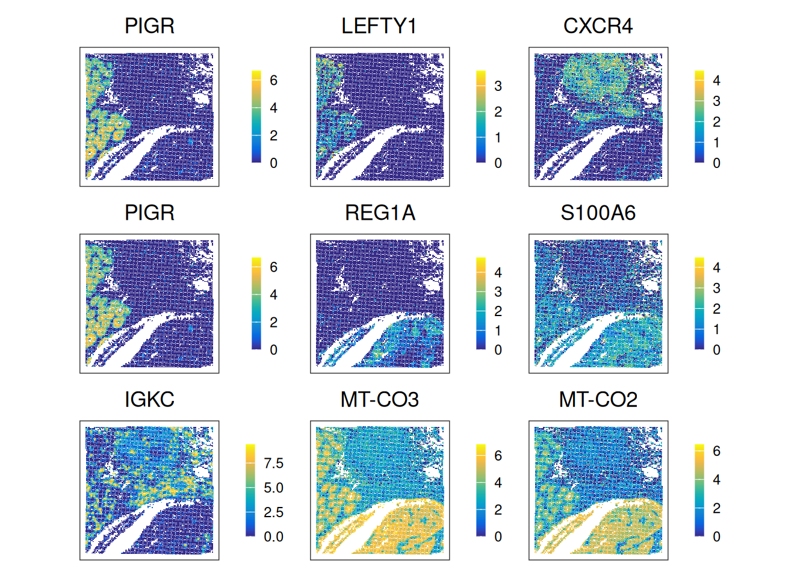

Exercise 6
Spatial Variable Genes (SVGs) and Feature-set Signatures
In this practical exercise, we focus on spatially structured gene expression, pathway-level signatures. We will calculate SVGs using two families of methods, compare SVGs to HVGs, understand how spatial information influences downstream analysis, and quantify pathway activities using gene-set scoring.
Learning Objectives
By the end of this exercise, you will be able to:
- Identify SVGs with two types of methods
- Compare SVGs to HVGs
- Score cells/spots with gene-set signatures and interpret spatial pathway patterns
Libraries
Load and Prepare Data
We begin by loading the SpatialExperiment object prepared in the previous exercise containing clustering results.
spe <- loadHDF5SummarizedExperiment(dir="results/day1", prefix="01.4_spe")Spatially variable genes (SVGs)
In Day 1, we performed the analyses using the set of most highly variable genes (HVGs), which capture overall transcriptional variability and are useful for identifying major sources of variation and reducing dimensionality. HVGs reflect global heterogeneity, but they do not use spatial information.
In spatial transcriptomics, however, we are often interested in genes whose expression changes across tissue in structured spatial patterns. These are called spatially variable genes (SVGs), which conceptually generalize HVGs by adding spatial information.
SVG inference methods differ in how they use spatial coordinates and what types of spatial structure they detect. They can be broadly grouped into three categories (Yan, Hua, and Li 2025):
Overall SVGs detect any spatial pattern across the tissue; can be used for feature selection for downstream analyses (e.g., spatially-aware clustering)
Spatial domain-specific SVGs identify genes whose expression differs between spatial domains, using domains as a proxy for spatial information
Cell type-specific SVGs use external cell type annotations to identify spatially structures expression within cell types.
In this exercise, we will focus on the first two categories, using nnSVG(Weber et al. 2023) for overall SVGs and DESpace(Cai, Robinson, and Tiberi 2024) for domain-specific SVGs.
set.seed(123)
# Sample 100 spots to decrease runtime in this exercise
n <- 100
sub <- spe[, sample(ncol(spe), n)]
rowData(sub)$gene_name <- rowData(sub)$Symbol
# Subset to a subset of 200 HVGs, to further decrease runtime
hvg_idx <- which(rowData(spe)$hvg)[seq_len(200)]
sub <- sub[hvg_idx, ]
# Remove genes with all zeros on this subset of spots
keep_genes <- rowSums(counts(sub)) > 0
sub <- sub[keep_genes, ]
# Remove lowly expressed genes (expressed in less than 1% of the spots)
keep_genes2 <- rowMeans(counts(sub) > 0) >= 0.01
sub <- sub[keep_genes2, ]
dim(sub)[1] 199 100## Renormalize on this subset of genes
sub <- logNormCounts(sub)nnSVG
nnSVG detects SVGs by modeling spatial gene expression using Gaussian processes, capturing smooth gradients or spatial trends.
Note:
nnSVGmay take up to ~10 minutes to run. Feel free to take a short break and grab a coffee! While it is running, take a look at the nnSVG paper and the package vignette to better understand how the method works, including its handling of covariates and multiple samples.
Inspect the nnSVG output stored in rowData(sub).
- What do the result columns represent?
- Select the top SVGs detected by
nnSVG.
# Select top SVGs
res_nnSVG <- rowData(sub)
res_nnSVG <- res_nnSVG[order(res_nnSVG$pval), ]
head(res_nnSVG, 3)DataFrame with 3 rows and 20 columns
ID Symbol Type subsets_Mito hvg
<character> <character> <factor> <logical> <logical>
PIGR ENSG00000162896 PIGR Gene Expression FALSE TRUE
LEFTY1 ENSG00000243709 LEFTY1 Gene Expression FALSE TRUE
CXCR4 ENSG00000121966 CXCR4 Gene Expression FALSE TRUE
gene_name sigma.sq tau.sq phi loglik runtime
<character> <numeric> <numeric> <numeric> <numeric> <numeric>
PIGR PIGR 2.392157 2.39216e-08 6.99998 -149.7420 0.033
LEFTY1 LEFTY1 0.192993 1.92993e-09 10.94084 -37.4109 0.026
CXCR4 CXCR4 0.802186 3.41954e-01 1.92394 -115.1814 0.023
mean var spcov prop_sv loglik_lm LR_stat rank
<numeric> <numeric> <numeric> <numeric> <numeric> <numeric> <numeric>
PIGR 0.715634 2.327622 2.16124 1.000000 -183.6337 67.7834 1
LEFTY1 0.141431 0.230258 3.10618 1.000000 -67.9637 61.1056 2
CXCR4 0.677274 1.028289 1.32243 0.701126 -142.7862 55.2095 3
pval padj
<numeric> <numeric>
PIGR 1.88738e-15 3.75588e-13
LEFTY1 5.38458e-14 5.35766e-12
CXCR4 1.02662e-12 6.80993e-11top_nnSVG <- res_nnSVG$gene_name[seq_len(3)]The main output is in rowData of the SpatialExperiment object, which includes: the likelihood ratio statistic (LR_stat), the gene’s rank based on this statistic (rank), raw p-values from a chi-squared test with 2 degrees of freedom (pval), p-values adjusted for multiple testing (padj), and the estimated effect size (prop_sv), defined as the proportion of spatial variance relative to total variance.
If you did not run
nnSVGdue to runtime constraints, you may use these pre-computed top SVGs:
top_nnSVG <- c("PIGR", "LEFTY1", "CXCR4")DESpace
DESpace detects genes that show significantly higher/lower expression in one spatial domain compared to the rest of the tissue. To run DESpace, we need cluster labels or manual annotation. Here we use pre-computed spatial clusters from the day1, exercise 4.
res <- svg_test(sub, cluster_col="Banksy", verbose = TRUE)using 'svg_test' for spatial gene/pattern detection.Filter low quality genes: min_counts = 20; min_non_zero_spots = 10.The number of genes that pass filtering is 57.single sample testHave a look at the DESpace results.
- What do each element of the returned list represent?
- Select top SVGs detected by
DESpace.
head(res_DESpace <- res$gene_results, 3) gene_id LR logCPM PValue FDR
PIGR PIGR 370.9333 17.04892 2.159632e-74 1.230990e-72
COL3A1 COL3A1 211.9558 17.26972 1.026703e-40 2.926105e-39
EPCAM EPCAM 108.7656 16.29632 2.622142e-19 4.982069e-18top_DESpace <- res_DESpace$gene_id[seq_len(3)]The main output is in gene_results: a data.frame containing: gene name (gene_id), likelihood ratio test statistics (LR), average (across spots) log-2 counts per million (logCPM), raw p-values (PValue) and Benjamini-Hochberg adjusted p-values (FDR).
Comparing HVGs and SVGs
As we did yesterday, we first model gene variance using a Poisson noise model with scran::modelGeneVarByPoisson() and select the top HVGs.
dec <- modelGeneVarByPoisson(spe)
top_HVG <- row.names(dec[order(dec$bio, decreasing = T), ])[1:3]
top_HVG[1] "IGKC" "MT-CO3" "MT-CO2"- Visualize the expression patterns of the top genes from each list via
ggspavis::plotCoords(). - What types of biological signals does each category capture?
gs <- c(
nnSVG=top_nnSVG,
DESpace=top_DESpace,
HVGs=top_HVG)
# Expression plots for each top gene
ps <- lapply(seq_along(gs), \(.) {
plotCoords(spe,
point_size=0,
annotate=gs[.],
assay_name="logcounts",
feature_names="Symbol")
})
wrap_plots(ps, nrow=3) & theme(
legend.key.width=unit(0.4, "lines"),
legend.key.height=unit(0.8, "lines")) &
scale_color_gradientn(colors = pals::parula())Scale for colour is already present.
Adding another scale for colour, which will replace the existing scale.
Scale for colour is already present.
Adding another scale for colour, which will replace the existing scale.
Scale for colour is already present.
Adding another scale for colour, which will replace the existing scale.
Scale for colour is already present.
Adding another scale for colour, which will replace the existing scale.
Scale for colour is already present.
Adding another scale for colour, which will replace the existing scale.
Scale for colour is already present.
Adding another scale for colour, which will replace the existing scale.
Scale for colour is already present.
Adding another scale for colour, which will replace the existing scale.
Scale for colour is already present.
Adding another scale for colour, which will replace the existing scale.
Scale for colour is already present.
Adding another scale for colour, which will replace the existing scale.
Try using SVGs for dimensionality reduction (e.g., PCA) and clustering (e.g., Leiden clustering, BayesSpace, Banksy) as seen yesterday (exercises 3 and 4). How do clustering results differ compared to using HVGs?
Feature-set signatures
So far, we have focused on single genes. We now consider gene set signatures, which summarize activity of pathways or biological program.
Here we will use AUCell(Aibar et al. 2017), which works in two main steps: (i) rank genes for every cell/spot, and (ii) compute an AUC score per (spot, gene set) pair, roughly reflecting the fraction of high-ranking genes that belong to a given set. High AUC values correspond to high coordinated expression of the gene set.
Retrieve MSigDB Hallmark gene sets
# Retrieve hallmark gene sets from 'MSigDB'
db <- msigdbr(species="Homo sapiens", category="H")Warning: The `category` argument of `msigdbr()` is deprecated as of msigdbr 10.0.0.
ℹ Please use the `collection` argument instead.How many gene sets are there? What is the range of gene counts across these sets?
Gene set scoring with AUCell
# Realize (sparse) gene expression matrix
mtx <- as(logcounts(spe), "dgCMatrix")
# Use ensembl identifiers as feature names
rownames(mtx) <- rowData(spe)$ID
# Filter for genes represented in panel
.gs <- lapply(gs, intersect, rownames(mtx))
# Keep only those with at least 5 genes
.gs <- .gs[sapply(.gs, length) >= 5]
# Build per-spot gene rankings
rnk <- AUCell_buildRankings(mtx, plotStats=FALSE, verbose=FALSE)
# Calculate AUC for each gene set in each spot
auc <- AUCell_calcAUC(geneSets=.gs, rankings=rnk, verbose=FALSE)
# Add results as spot metadata
colData(spe)[rownames(auc)] <- res <- t(assay(auc)) - Calculate the percentage of spots with non-zero AUC scores for each gene set (Hint: use
rowMeans()). - Which gene sets are rarely detected? Which ones are mostly detected?
- Identify the gene set with the highest score variability across spots (Hint:
corVars()). - Visualize this top-scoring set in tissue space via
ggspavis::plotCoords(). - Visualize how signature scores correlated with one another (Hint: compute Spearman correlations and visualize it with
pheatmap()).
# The percentage of spots with non-zero score across signatures
fq <- rowMeans(assay(auc) > 0)
fq <- sort(round(100*fq, 2))
## Rarely detected
head(fq) pancreas_beta_cells notch_signaling
80.86 83.17
hedgehog_signaling wnt_beta_catenin_signaling
88.61 91.68
apical_surface angiogenesis
95.42 95.66 ## Mostly detected
tail(fq)oxidative_phosphorylation p53_pathway tnfa_signaling_via_nfkb
100 100 100
uv_response_dn uv_response_up xenobiotic_metabolism
100 100 100 # Subset on highest score variability across spots
## Variance across spots
var <- colVars(res)
## Top sets
top <- names(tail(sort(var), 1))
# Scale the rows (genes) for better visualization in the heatmap.
spe[[top]] <- scale(spe[[top]])
plotCoords(spe, annotate = top) 
cm <- cor(t(assay(auc)), method="spearman")
pheatmap(cm,
breaks=seq(-1, 1, 0.1),
color=pals::coolwarm(20),
cellwidth=10, cellheight=10)
Highly correlated sets will exhibit similar spatial patterns.
Clear your environment:
Key Takeaways:
- HVGs and SVGs emphasize different aspects of the data: HVGs (global heterogeneity); SVGs (spatially structured patterns).
- Different SVG methods detect different types of structure.
- Gene set signatures summarize coordinated activity of biological pathways. They can be mapped across the tissue and compared between regions or clusters.